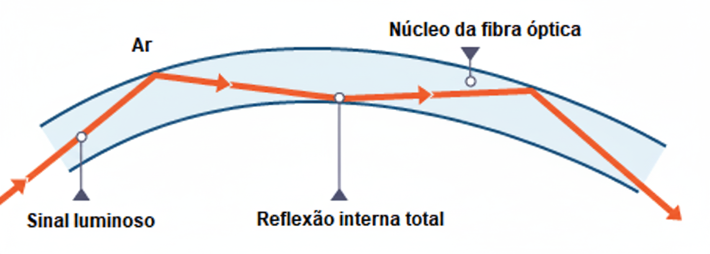

Os Meios Físicos que Conectam o Mundo
Prof. William Paiva
Para que os dados viajem de um ponto a outro em uma rede, eles precisam de um caminho. Esse caminho é o meio de transmissão.
Nesta aula, vamos explorar os três tipos de cabos mais importantes na história e na atualidade das redes de computadores:
O cabo coaxial foi um dos primeiros a ser usado em redes de computadores (padrão Ethernet 10Base2 e 10Base5). Ele possui um núcleo de cobre central, isolamento, uma malha metálica que atua como blindagem e uma capa externa.
Você está certo: seu uso em redes de computadores locais (LANs) hoje é praticamente inexistente. Ele foi substituído por tecnologias mais eficientes e baratas.
Usos Atuais: Hoje, ele é amplamente utilizado para TV a cabo, antenas de TV/satélite e em sistemas de câmeras de segurança (CFTV).
Diferente dos cabos metálicos que transmitem dados através de pulsos elétricos, a fibra óptica transmite informações através de pulsos de luz.
Um cabo de fibra óptica é composto por filamentos extremamente finos de vidro ou plástico, capazes de guiar a luz por longas distâncias com perdas mínimas, baseando-se no princípio da Reflexão Total Interna.
A luz é "aprisionada" no núcleo da fibra e viaja "ricocheteando" em suas paredes internas.
Possui um núcleo extremamente fino. Permite que apenas um feixe de luz viaje, quase em linha reta. Usa laser como fonte de luz.
Ideal para: Longas distâncias e altíssimas velocidades. É a base da internet global.
Possui um núcleo mais grosso. Permite que múltiplos feixes de luz viajem ao mesmo tempo, refletindo em vários ângulos. Usa LED como fonte de luz.
Ideal para: Distâncias curtas, como em data centers e redes de campus.
(Para referência, um fio de cabelo humano tem em média 50 a 70 µm de diâmetro)
| Característica | Fibra Monomodo (SMF) | Fibra Multimodo (MMF) |
|---|---|---|
| Diâmetro do Núcleo | Muito Fino (~9 µm) | Mais Grosso (~50 / 62.5 µm) |
| Fonte de Luz | Laser | LED (Light Emitting Diode) |
| Distância Máxima | Muito Longa (> 100 km) | Curta (Até 2 km) |
| Largura de Banda | Praticamente Ilimitada | Limitada (pela dispersão modal) |
| Custo (Cabo + Equip.) | Mais Caro | Mais Barato |
Existem diversos tipos de conectores para fibra, cada um com um mecanismo de encaixe diferente.
Como unir dois cabos de fibra ou conectar um cabo a um equipamento? Diferente dos cabos de cobre, não podemos simplesmente "emendar" os fios.
O alinhamento do núcleo da fibra deve ser perfeito para que a luz passe com o mínimo de perda. Existem duas técnicas principais para isso:
É o método de melhor qualidade. As pontas das duas fibras são decapadas, limpas e clivadas (cortadas com precisão nanométrica).
Uma "Máquina de Fusão" alinha os núcleos perfeitamente e dispara um arco elétrico, derretendo e fundindo as duas pontas de vidro como se fossem uma só. A perda de sinal é quase zero.
Uso: Emendas em backbones de internet, cabos submarinos e qualquer aplicação crítica que exija máxima performance.
É um método mais rápido e barato, que não exige uma máquina de fusão cara. Usa um tipo de conector especial que alinha as duas fibras e as prende mecanicamente.
Dentro do conector, há um gel de refração que ajuda a minimizar a perda de luz entre as pontas que não estão perfeitamente unidas.
Uso: Reparos de emergência, instalações de "última milha" (como levar a fibra para dentro da casa do cliente) onde o custo e a velocidade da instalação são prioritários.
É o cabo mais utilizado em redes locais (LANs) no mundo. Consiste em oito fios de cobre, organizados em quatro pares trançados.
A ideia de trançar os pares foi inventada por Alexander Graham Bell em 1881. Ele descobriu que, ao trançar os fios, conseguia reduzir a interferência (ou "ruído") nas linhas telefônicas.
Este mesmo princípio é a chave para o funcionamento das redes modernas.
Quando um sinal elétrico viaja por um fio, ele cria um campo eletromagnético ao seu redor. Se outro fio estiver muito próximo, esse campo pode induzir um sinal "fantasma" e indesejado nele.
Esse fenômeno é chamado de Diafonia ou Crosstalk, e é uma das principais fontes de erros em uma transmissão de dados.
Como o trançamento dos pares resolve isso?
O trançamento dos fios faz com que os campos eletromagnéticos gerados se cancelem mutuamente, protegendo o sinal da interferência.
Para combater a diafonia e a interferência externa (de motores, lâmpadas fluorescentes, etc.), os cabos de par trançado podem ter blindagens.
A nomenclatura segue um padrão: XX / Y TP, onde XX é a blindagem geral e Y é a blindagem individual dos pares.
| Sigla | Nome Completo (Ex: U/UTP) | Descrição | Vantagem / Desvantagem |
|---|---|---|---|
| UTP | Unshielded Twisted Pair | Nenhuma blindagem. O mais comum. | Flexível e barato / Mais suscetível à interferência. |
| FTP (F/UTP) | Foiled Twisted Pair | Uma folha de alumínio envolvendo todos os 4 pares. | Boa proteção contra interferência externa / Menos flexível. |
| STP (S/UTP) | Shielded Twisted Pair | Uma malha metálica envolvendo todos os 4 pares. | Proteção superior à folha / Mais grosso e caro. |
| SFTP (SF/UTP) | Shielded Foiled Twisted Pair | Possui a malha e a folha de alumínio gerais. | Excelente proteção externa / Rígido e caro. |
Os cabos de par trançado evoluíram ao longo do tempo. Cada "Categoria" representa um padrão com especificações mais rigorosas, permitindo frequências mais altas e, consequentemente, velocidades maiores.
| Categoria | Frequência Máx. | Velocidade Máx. | Uso Comum |
|---|---|---|---|
| CAT 1 a 4 | < 20 MHz | < 16 Mbps | Obsoletos (antigas redes de voz e dados). |
| CAT 5e | 100 MHz | 1 Gbps (Gigabit) | Padrão mínimo para redes Gigabit residenciais e de pequenos escritórios. |
| CAT 6 | 250 MHz | 1 Gbps (até 10 Gbps em distâncias curtas < 55m). | Redes corporativas, melhor desempenho e menos diafonia que o 5e. |
| CAT 6a | 500 MHz | 10 Gbps | Padrão para redes de 10 Gigabit. Data centers, aplicações de alta demanda. |
| CAT 7 / 7a | 600 / 1000 MHz | 10 Gbps (potencial para 40 Gbps) | Sempre blindado (S/FTP). Ambientes industriais e data centers de altíssimo desempenho. |
| CAT 8 | 2000 MHz | 25 / 40 Gbps | Distâncias muito curtas (até 30m). Exclusivo para data centers (conexão switch-servidor). |
A "ponta" do cabo de rede é chamada de conector RJ45 (Registered Jack 45).
É a peça que "crimpa-se" na ponta do cabo.
É o encaixe encontrado em paredes, patch panels e alguns equipamentos.
Sem Blindagem vs. Blindado: Plugs blindados possuem uma carcaça metálica que faz contato com a blindagem do cabo (e com o "dreno", um fio extra sem capa).
Isso garante que a proteção contra interferência seja contínua de ponta a ponta. Um cabo blindado com conector comum perde grande parte de sua eficácia.
CAT5e vs. CAT6: Conectores CAT6 possuem os contatos internos em zigue-zague (staggered).
Isso afasta os fios uns dos outros, ajudando a reduzir a diafonia bem na ponta do cabo, que é o ponto mais crítico pois é onde os pares são desfeitos para entrar no conector.
O processo de fixar o conector no cabo é chamado de crimpagem.
Para isso, a ordem dos fios coloridos dentro do conector é fundamental e segue dois padrões mundiais: T568A e T568B.
A única diferença entre eles é a inversão dos pares Verde e Laranja.
Selecione um padrão:
O padrão T568B é o mais utilizado no Brasil e no mundo.
Usa o mesmo padrão nas duas pontas (ex: T568B e T568B). É o cabo padrão para conectar um computador a um switch ou roteador.
Usa padrões diferentes nas pontas (T568A e T568B). "Cruza" os pares de transmissão e recepção. Usado antigamente para conectar dois computadores diretamente.
Obs: Hoje é raro, pois a maioria dos equipamentos modernos possui a tecnologia Auto MDI-X, que detecta e ajusta a conexão automaticamente.
A conexão em um conector fêmea não usa um alicate de crimpagem comum. Usa-se uma ferramenta de impacto chamada Punch Down.
O próprio conector possui um guia de cores impresso para os padrões A e B. Você posiciona cada fio na sua respectiva cor e usa a ferramenta para "punchar", que ao mesmo tempo fixa o fio e corta o excesso.
| Característica | Cabo Coaxial | Par Trançado (CAT6) | Fibra Óptica (Monomodo) |
|---|---|---|---|
| Velocidade Máx. | ~10 Mbps (em redes antigas) | 1 Gbps a 10 Gbps | > 100 Gbps (Terabits) |
| Custo | Baixo | Muito Baixo | Alto (equipamentos) |
| Facilidade de Montagem | Médio | Fácil | Muito Difícil (requer precisão) |
| Flexibilidade | Média | Alta | Baixa (não pode dobrar muito) |
| Imunidade a Interferência | Boa | Variável (depende da blindagem) | Total (imune a EMI/RFI) |
| Distância Máxima | ~500 metros | 100 metros | > 100 quilômetros |
| Usos Comuns | TV a Cabo, CFTV | Redes Locais (LANs) | Backbones, Internet, Data Centers |